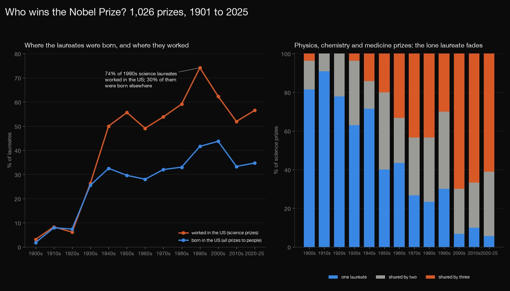
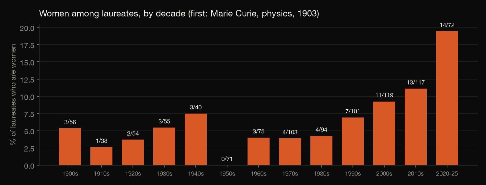
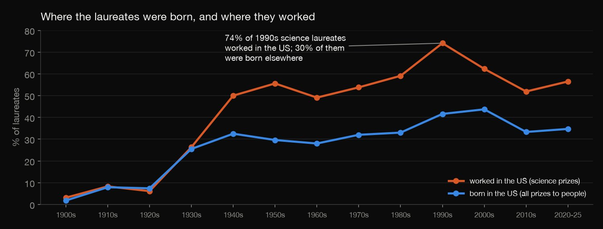
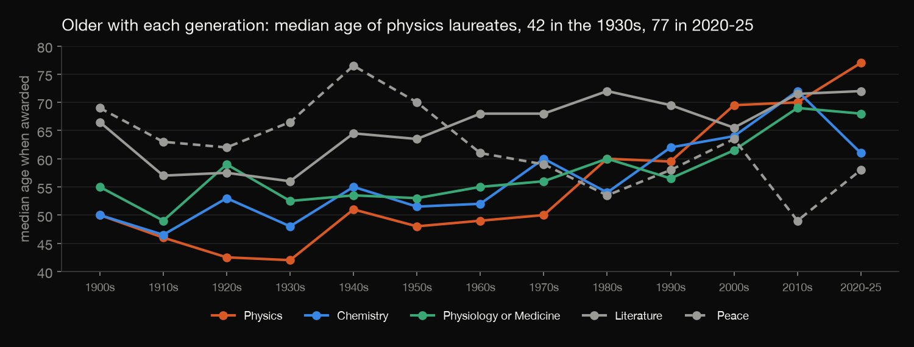
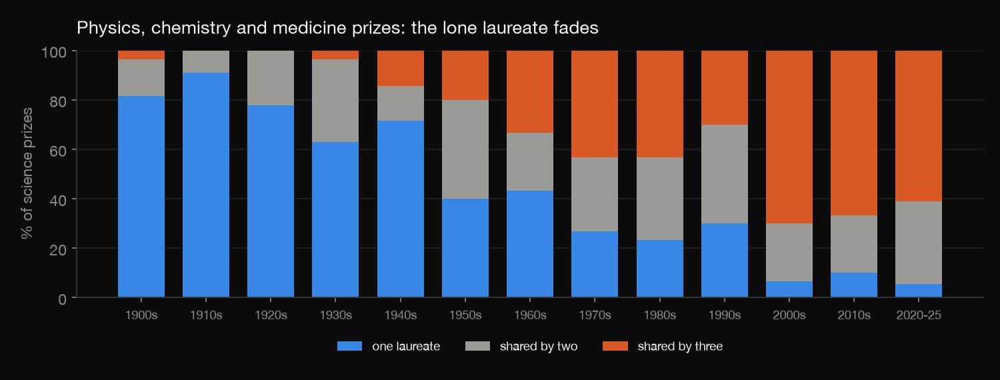

Python · Exploratory analysis · 2026-10
Who Wins the Nobel Prize?
All 1,026 Nobel Prizes from 1901 to 2025, counted: where laureates were born and where they worked, how few are women, how much older they have become, and how the lone laureate has nearly vanished from the science prizes.

Age is the award year minus the birth year, so it can be off by one. "Worked in" is the first institution listed for a prize, which exists only for the science prizes. The 2020s are six prize years (2020–25), so their points are noisy. Countries are today's names for the places.
01 — The problem
Everyone has a picture of who wins a Nobel Prize: older scientists in famous American labs, almost all of them men. How much of that is true, and what has changed since 1901?
The Nobel Foundation publishes every laureate in a free API, so the answers can be counted instead of remembered. The questions follow DataCamp's "Visualizing the History of Nobel Prize Winners" project; the data here is the official API through 2025.
02 — What I built
A table with one row for every prize received (1,026 rows, for 1,018 laureates: 990 people and 28 organisations), and five questions answered from it:
- Who: gender and country of birth.
- Where: the US share by decade, by where laureates were born and by where science laureates worked.
- Women: their share by decade and category, and the first.
- Age and teamwork: median age at the award, and how many people share a science prize.
- Check:
check.pyrecounts 255 numbers from the raw file in plain Python, without pandas.
03 — How it was built
- 01
Download every laureate
The Nobel Prize API returns all laureates in one call: name, gender, birthplace and, for each prize, the year, category, share and the institution where the laureate worked. The script keeps the raw file out of the repository and records the pull date and counts, so every number on this page traces to one snapshot (3 October 2026, prizes 1901 to 2025). The data is free to use under CC0.
- 02
One row per prize, with today's country names
A person who won twice is two rows. Countries use the API's now names, so a laureate born in Prussia or Austria-Hungary is counted under the country that place is in today, and one country's count isn't split across old names. Organisations have no birthplace or gender, so those figures use the 995 prizes to people.
place = (l.get("birth") or l.get("founded") or {}).get("place", {}) ... "birth_country": place.get("countryNow", {}).get("en") if person else None, - 03
Born in the US, or working there
"How American is the Nobel?" hides two questions. Birthplace says where laureates came from; the institution says where the work was done. The institution is listed only for the science prizes (662 rows, 657 with one), so that half of the comparison uses physics, chemistry and medicine. Among laureates who worked in the US, the script also counts how many were born somewhere else.
by["based_us_pct"] = (100 * by["sci_based_us"] / by["sci_with_affiliation"]).round(1) by["foreign_born_pct_of_us_based"] = (100 * by["sci_based_us_foreign_born"] / by["sci_based_us"].where(by["sci_based_us"] > 0)).round(1) - 04
Women, by decade and category
The share of women is counted in every decade and category. Small cells are noisy: 3 of 5 Peace laureates in 2020–25 is 60% but means three women, so only cells with at least 5 laureates are ranked.
- 05
Age, and how many share a prize
Age is the award year minus the birth year. For the three science prizes the script counts laureates per prize, by decade: one, two or three (no science prize in the data has more).
- 06
Check it from the raw file
check.pyrereads the raw JSON with plain Python (json, csv and statistics; no pandas and noanalyze.py) and recounts the totals, men and women, every birth-country count, the US numbers for each decade, every decade-and-category cell for women, the multiple winners, every median age and the laureates per science prize. 255 numbers, all equal to what the analysis wrote.for r in table("women.csv"): same(f"women {r['decade']} {r['category']}", cell[(int(r["decade"]), r["category"])], [int(r["laureates"]), int(r["women"])])
04 — Results

Women are 6.8% of the people honoured, but 19% since 2020. They won 68 of the 995 prizes to people. The first was Marie Curie (physics, 1903), and in the 1950s none won. Among decade-and-category cells with at least 5 laureates, the highest are Peace in 2020–25 (3 of 5), Peace in the 2010s (5 of 10) and Literature in 2020–25 (3 of 6).

| Born in | Prizes | Share |
|---|---|---|
| USA | 299 | 30.1% |
| United Kingdom | 95 | 9.5% |
| Germany | 84 | 8.4% |
| France | 63 | 6.3% |
| Japan | 30 | 3.0% |
The US wins more by workplace than by birth. The 2000s have the highest share of US-born laureates (43.7%). But 74% of the 1990s science laureates worked at a US institution, and 30% of those had been born elsewhere (42.5% in the 2010s).

Laureates are getting older. The median age of physics laureates went from 42 in the 1930s to 70 in the 2010s (77 in 2020–25, six years), chemistry from 48 to 72, and medicine from 52.5 to 69.

The lone laureate has nearly gone from the science prizes. In the 1900s 22 of 27 prizes (81.5%) went to one person. In the 2010s 3 of 30 (10.0%) did, and 20 (66.7%) were shared by three. The average prize had 1.22 laureates, then 2.57.
Who won more than once. Marie Curie (physics 1903, chemistry 1911), Linus Pauling (chemistry 1954, peace 1962), John Bardeen (physics 1956 and 1972), Frederick Sanger (chemistry 1958 and 1980) and K. Barry Sharpless (chemistry 2001 and 2022), and two organisations: the Red Cross (1917, 1944, 1963) and the UN refugee agency (1954, 1981).
05 — What I'd do next
- Add the 2026 prizes once they are announced in October:
download.py,analyze.pyandcheck.pyrerun in seconds. - Rank the institutions where science laureates worked, to see how concentrated the prizes are in a few universities.
- Compare the rise in shared prizes with the rise in co-authors per paper, to see whether teamwork explains it.